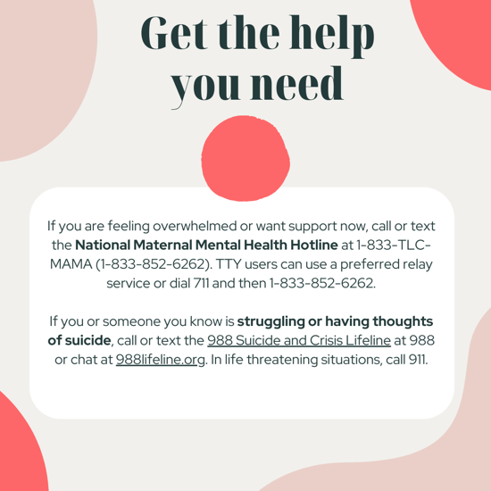
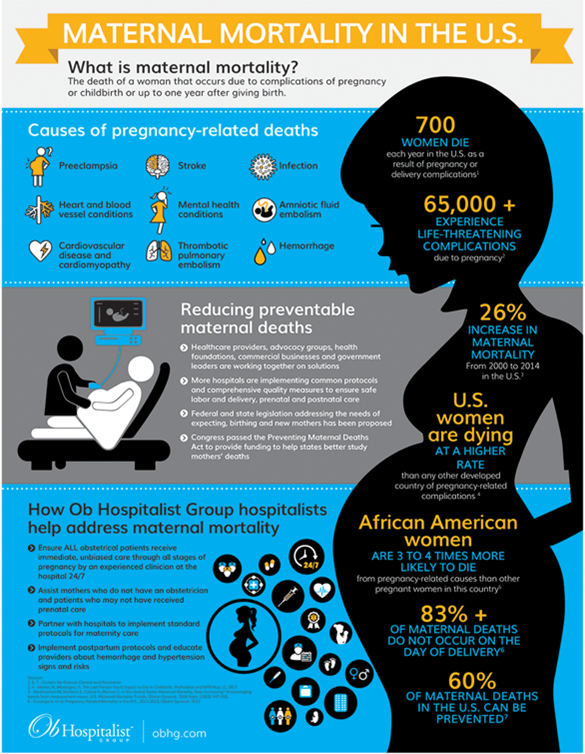

How Can We Empower Pregnant Women and Cultivate Better Health Outcomes: We Are the Lifeline to Life?
Mental Health in a Changing World is the 2024 Mental Health Awareness Month theme. IAWH aims to help break the stereotypes and stigmas that plague the topic for everyone, but particularly those we serve—you. Women often prioritize the well-being of their families and friends but may overlook their self-care. Many new mothers are missing out on postpartum care.
IAWH trigger warning: Mentions of mental health distress, self-harm, and suicide in this and adjoining materials or links.

When I gave birth to my first child (1989), I lived and worked in the United Kingdom, England, and therefore was afforded insurance through the National Health System. My OB/GYN referred me to a local midwifery service that came to my home and discussed "new mum" care, including breastfeeding, nutrition, and other topics related to caring for my son and myself. It was a wonderful experience and benefited me throughout motherhood.
However, it was a rude awakening to return to the United States and realize little support post-pregnancy- that was in 1992. I was fortunate to have received such excellent support and guidance for my son, and I carried over what I’d learned to my daughter a few years later.
According to Healthline.com, the U.S. focuses primarily on the birth plan and nursery, while postpartum-positive countries (Finland, Spain, the Netherlands, and the U.K.), incorporate postpartum teaching and preparation into antepartum care – we need to enhance our focus to align our care accordingly.
So why do women in the United States suffer from such high maternal mortality rates? The increased risk of pregnancy complications leading to maternal death can be attributed to factors such as advanced maternal age, disparities in healthcare, and the prevalence of chronic health conditions. However, data from state committees [on health] suggests that about 84% of pregnancy-related deaths are preventable. In particular, "Women with pregnancy-related health complications may not always recognize the early warning signs of their illness. And even if they do, the providers may miss or cause a delay in diagnosis, which can lead to more serious or even deadly consequences," says Monique Rainford, MD, a Yale Medicine obstetrician-gynecologist.
The National Women's Health Network (NWHN) states women with "Comorbidities and Chronic Health Conditions that are linked to obesity or chronic conditions such as hypertension, diabetes, or heart disease are at a higher risk for complications during pregnancy and childbirth. These conditions can lead to gestational diabetes, preeclampsia, and other serious health issues, especially if they are not being properly monitored and treated. Women with fibroids may also experience pregnancy complications or struggle with fertility. The NWHN outlines systemic reasons for poor outcomes here in 6 Underlining Causes of the Maternal Health Crisis in the U.S. So, we know it's a complicated web, and discrimination, inequity, and racism are factors leading to these poor maternal health outcomes.

Postpartum Depression (PPD)
According to the Office on Women's Health, Postpartum depression (PPD) is a common mental health condition that can affect anyone. While it can feel hard or lonely, healing from PPD is possible. About 1 in 8 women report symptoms of PPD in the year after giving birth. Everyone experiences PPD differently. Feeling sad, anxious, or overwhelmed are some of the signs. You might not feel connected to your baby, or you might not feel love or care for the baby. If these feelings last longer than two weeks, you may have PPD.
What Type of Pregnancy Doctor Is Right for You?
In search for an immediate solution, the article What Type of Pregnancy Doctor Is Right for You is comprehensive and may help women or birthing individuals search for the proper care. In addition, the role of an ObGyn Hospitalist, also called a laborist, "performs the dedicated role of providing care to pregnant women during labor and delivery in a hospital setting."
According to The Ob Hospitalist Group, "Even with a due date, you can never truly predict when the baby will arrive. Many women may see the same provider from the beginning of their pregnancy journey to delivery and post-pregnancy. However, based on timing, that may only sometimes be possible. In these instances, an ObGyn hospitalist can provide their expertise. Since they focus solely on labor and delivery, they're especially agile in adapting to quickly changing conditions that can accompany a delivery. See the infographic that shares critical facts and figures at a glance – including the most common causes of preventable maternal death and how health systems, clinicians, advocates, and agencies can work together to address the issue.
Explore the resources below using the drop-down arrows (>) to find help in your area or to learn more about mental health.
Connect to Community Resources
National Alliance on Mental Illness
NAMI, the National Alliance on Mental Illness, is a mental health organization dedicated to building better lives for the millions of Americans affected by mental illness.
988 Suicide & Crisis Lifeline
The 988 Suicide & Crisis Lifeline is a 24-hour, toll-free, confidential suicide prevention hotline available to anyone in suicidal crisis or emotional distress.
Postpartum Support International
This organization seeks to increase awareness among the public and professional communities about the emotional changes women experience during pregnancy and postpartum.
Learn More about Mental Health
Office on Women's Health – Talking Postpartum Depression
Talking Postpartum Depression
Moms' Mental Health Matters
This initiative is designed to educate consumers and healthcare providers about who is at risk for depression and anxiety during and after pregnancy, the signs of these problems, and how to get help.
Depression in Women
Learn about depression in women (including causes, symptoms, and treatment) from the National Institute of Mental Health.
Depression Fact Sheet
This fact sheet from the Office of Women's Health discusses the types, signs, and treatment of depression.
Mental Health
Content provided by the CDC's Mental Health website includes links to tools and resources and information on coping with COVID-19.
Feeling Sad After Your Baby is Born?
This video from the American Academy of Pediatrics encourages parents who are sad or anxious to talk with their pediatricians.
Additional Resources
- Henry Ford Health Pregnancy Health Advocacy Tips for Black Women
- Office of Women's Health Talking Postpartum Depression (PPD) | a Group Discussion: Five women from different backgrounds have one thing in common: they decided to get help for PPD. Watch them discuss their PPD experiences together and the ways they found support at www.womenshealth.gov/talkingPPD.
-
Talking Postpartum Depression | Shawlette's Story – Full-Length(Office on Women's Health)
-
American Hospitals are Failing Expectant Mothers: Midwives Offer a Solution
-
Feeling Ignored is Never Good for Our Health: If you've ever felt you've been ignored, you're not alone. These stories gathered by NBC's Today Show are like the band of sisterhood that lock arm in arm and confirm, "It's not all in our heads." They inspire us to use our voices, especially about our health. Women speak out about how doctors dismissed their pain, downplayed their symptoms, or sent them to a psychiatrist, and you should, too.
Janine E. Payne, MPH
Co-Executive Director
This article first appeared on the IAWH Health blog on May 31, 2024 and is preserved here as part of the IAWH Health Journal archive. Information reflects what was known at the time of publication. This article is for general education and is not medical advice.